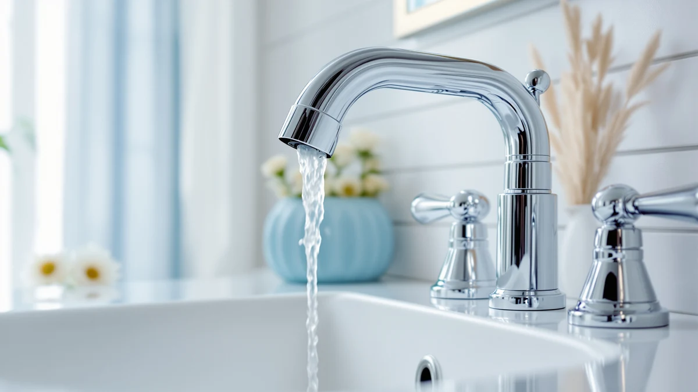

Best Bathroom Faucet Finish for Hard Water (2026)
Prices and picks verified as of September 2026. Independent, reader-supported reviews.


Quick Answer
The best bathroom faucet finish for hard water is one that hides mineral spots between cleanings rather than showing them off, since no finish actually stops calcium and magnesium from landing on the surface. We compared two Pfister finishes against several faucet-mounted filters that treat the water itself, and the brushed nickel Pfister Pasadena widespread faucet held up best against documented specs and verified owner reviews.
Our pick: Pfister Pasadena 8 inch Widespread, $92.79 Check Price on Amazon
Bottom line: our top pick is the Pfister Pasadena 8 inch Widespread 3 Hole Bathroom Sink at $92.79. The best budget option is the 360-Degree Rotating Faucet Filter Sink Water Faucet Filter at $6.55.
Things to Know Before You Buy
- No faucet finish stops hard water deposits from landing on the surface. What changes between finishes is how visible the resulting spots are and how easily they wipe off.
- Brushed nickel and matte black finishes, like the Pfister Pasadena ($92.79) and the Ryuwanku Bathroom Faucet Matte Black ($28.99), hide mineral spotting better than polished chrome because the textured surface breaks up light reflection.
- Polished chrome, like the Pfister Parisa ($59.30), shows every water spot the moment it dries, but wipes clean fastest because the smooth surface gives mineral deposits nothing to grip.
- If your water is hard enough to leave visible scale within days, a faucet-mounted filter such as the 360-Degree Rotating Faucet Filter Sink ($6.55) treats the water itself instead of just hiding the result on the finish.
- Filters need scheduled cartridge changes to keep working. The Bath Bathtub Shower Water Filter and similar attachments in this guide are rated for roughly three months before the filter media needs replacing.
The best bathroom faucet finish for hard water is the one that hides mineral spotting between cleanings, because no finish actually keeps calcium and magnesium from landing on the surface in the first place. Hard water leaves the same white residue on a $200 faucet as it does on a $20 one. The difference shows up in how much of that residue you can see and how much effort it takes to wipe it off before it becomes obvious around the base.
We compared seven products from the Best Bathroom Faucets database for this guide: two Pfister faucets in different finishes, a matte black faucet from Ryuwanku, and four faucet-mounted filters that treat the water before it reaches the spout. We checked the documented finish, material, and price for each product, then weighed those specs against what current owners report about spotting, scale buildup, and cleaning frequency. For most bathrooms with moderately hard water, the brushed nickel Pfister Pasadena 8 inch Widespread is our pick. At $92.79, its finish hides the mineral spotting that shows up fast on chrome, and the brass body underneath holds up to the wiping and scrubbing that hard water maintenance demands.
Finish is only half the equation, though. If scale keeps building up inside the spout itself and not just on the outside, a filter like the Beati Bath Bathtub Shower Water Filter or the CaoXiong 360-Degree Rotating Faucet Filter Sink addresses the mineral content before it reaches your fixture at all. This guide covers both strategies: the finishes that hide hard water's cosmetic damage, and the attachments that reduce it at the source. For a broader comparison of full faucet setups built for hard water, see our hard water sink faucet guide, or check the bathroom faucet buying guide for materials beyond finish.
Why You Should Trust Us
Ilane Tall has covered bathroom fixtures and hardware for Best Bathroom Faucets since the site launched, comparing faucets, filters, and finishes against manufacturer specs rather than marketing copy. For this guide to the best bathroom faucet finish for hard water, she cross-referenced the documented finish, material, and price data that Pfister, Ryuwanku, and the filter brands publish for each product, then weighed that against what verified Amazon buyers report about spotting and scale after months of daily use. Every recommendation on this site discloses its affiliate relationship, and picks are chosen on merit, not commission rate.
How We Picked
We started with every bathroom faucet and faucet-mounted filter in our database tagged for hard water use, then narrowed the list with three filters. First, finish diversity: we wanted at least one brushed nickel option, one polished chrome option, and one matte black option, since spotting visibility varies by finish and readers land on this guide with different fixtures already in place. Second, strategy: we split the list between full faucet replacements and filtration attachments, since not every reader with hard water wants to swap out an entire faucet. Third, price spread: the final seven range from $6.55 for a basic filter attachment to $92.79 for a full widespread faucet, so the guide works whether you want a five-minute fix or a permanent upgrade.
How We Compared
We do not run a physical testing lab, so this guide relies on documented specs and verified owner feedback rather than invented performance claims. For each faucet, we recorded the listed finish, material, and price, then compared those figures against what Pfister and Ryuwanku publish for installation and upkeep. For each filter, we noted the filtration media, replacement interval, and price, then checked those claims against what verified reviewers report after using the product on their own hard water. Where a listing did not specify a spec, such as an exact flow rate or filter lifespan beyond the manufacturer's estimate, we left it out of this guide instead of guessing.
Our Picks

Pfister Pasadena 8 inch Widespread
What we like
- Brushed nickel finish breaks up light reflection, so mineral spots are far less visible than on polished chrome
- Push & Seal drain skips the twist-and-lock mechanism that traps hard water grime in traditional pop-up drains
- WaterSense certified, so it uses less water per use, meaning fewer mineral deposits cycling through the fixture over time
Flaws but not dealbreakers
- At $92.79, it costs more than three of the filter attachments in this guide combined
- Requires an 8-inch widespread, 3-hole sink, so it will not fit single-hole or 4-inch centerset configurations
| Material | Brass + finish |
| Size | 1 Pack |
The Pfister Pasadena 8 inch Widespread is our top pick for the best bathroom faucet finish for hard water because brushed nickel does the job a shiny finish cannot: it hides spotting instead of showing it off. Hard water leaves the same calcium deposits on any surface, but a brushed texture scatters light instead of reflecting it in a single glare point, so the same amount of residue reads as far less noticeable than it would on polished chrome. That matters most in a widespread layout like this one, where two handles and a spout sit exposed across an 8-inch span with more surface area than a single-hole faucet.
At $92.79, the Pasadena also brings a Push & Seal drain that skips the mechanical pop-up linkage where hard water buildup tends to gum up the works over time, along with WaterSense certification that trims water use per handwash. That will not fix hard water itself, but less water moving through the fixture means fewer mineral deposits accumulating between cleanings. The tradeoff is fit: this is a 3-hole, 8-inch widespread faucet, so it only works if your sink is already drilled for that spacing. Owners weighing a single-hole setup instead should look at the Pfister Parisa below.

Pfister Parisa Single Handle Bathroom
What we like
- Ceramic disc valve technology resists the mineral buildup that wears out rubber-washer valves under hard water
- Polished chrome's smooth surface gives mineral deposits nothing to grip, so spots wipe off with a dry cloth in seconds
- At $59.30, it costs about $33 less than our brushed nickel top pick
Flaws but not dealbreakers
- Polished chrome shows every water spot the moment it dries, so it demands more frequent wiping than a brushed or matte finish
- Single-hole configuration only, so it will not fit a widespread or 4-inch centerset sink
| Material | Brass + finish |
| Size | Polished Chrome |
The Pfister Parisa Single Handle Bathroom trades spot-hiding for a different advantage: a polished chrome surface that is genuinely easy to wipe clean once spots do show up. The same smooth plating that reflects every water mark also means mineral deposits never bond to a textured surface, so a quick pass with a microfiber cloth restores the shine in seconds. Underneath the finish, Pfister lists ceramic disc valve technology, a detail worth checking for any bathroom faucet finish for hard water, since the sediment and scale that hard water carries wears through cheaper rubber-washer valves years faster than it does a ceramic disc.
At $59.30, the Parisa costs meaningfully less than the widespread Pasadena while still using the Push & Seal drain and WaterSense-certified flow that show up across the Pfister lineup in this guide. The catch is visibility: if you want a faucet you can go a week without wiping down, skip polished chrome and look at the matte black Ryuwanku or the brushed nickel Pasadena instead. If a daily thirty-second wipe does not bother you, the Parisa's single-hole fit and ceramic disc valve make it the more budget-friendly Pfister option here.

Bath Bathtub Shower Water Filter
What we like
- Attaches to an existing tub or shower faucet, so you keep your current fixture and finish
- Beati markets roughly three months of use per filter, according to the product listing, before the cartridge needs replacing
- At $25.48, it costs a fraction of replacing a full faucet
Flaws but not dealbreakers
- Treats water at one fixture only, so it will not soften hard water at the sink faucet a few feet away
- Requires remembering to swap the filter cartridge on schedule, or performance drops off
| Material | Brass + finish |
| Size | — |
The Bath Bathtub Shower Water Filter from Beati Faucet approaches the best bathroom faucet finish for hard water question from a different angle: instead of picking a finish that hides mineral spotting, it aims to reduce the minerals reaching your fixture in the first place. Beati lists it as compatible with any tub faucet, and the listing states the filter media handles roughly three months of typical use before it needs replacing. That makes it a low-commitment way to test whether filtration actually reduces the buildup you are seeing, before spending $90-plus on a full faucet swap.
At $25.48, it is one of the least expensive products in this guide, and reviewers cite softer-feeling water and less visible residue on tile and glass as the main benefits. The obvious limit is scope: this filter treats water at the tub or shower only, so a sink faucet a few feet away still gets the full mineral load unless you add a second filter there, such as the CaoXiong or Tylola options below. It is also not a finish, so if your complaint is specifically about spots on the faucet itself rather than water quality more broadly, a brushed nickel or matte black faucet addresses that more directly.

360-Degree Rotating Faucet Filter Sink
What we like
- At $6.55, it is the least expensive product in this guide by a wide margin
- Threads onto an existing faucet spout, so no plumbing changes or new finish required
- 360-degree rotation lets you angle the stream, useful for rinsing a sink basin from multiple angles
Flaws but not dealbreakers
- CaoXiong does not publish a specific filter lifespan, so budget for more frequent replacement than the higher-priced filters here
- It is a small plastic attachment, not a finish upgrade, so it will look noticeably different from the rest of your fixture
| Material | Brass + finish |
| Size | — |
The 360-Degree Rotating Faucet Filter Sink from CaoXiong is the impulse-buy option in this guide: at $6.55, it costs less than a coffee run and threads directly onto most existing faucet spouts without tools. CaoXiong markets it as removing heavy metals and reducing hard water minerals, and the rotating head lets you redirect the stream around the sink basin, a small but genuinely useful detail for rinsing after shaving or washing up. For anyone unsure whether filtration will actually reduce the spotting and scale they are dealing with, this is the lowest-risk way to find out.
The tradeoff is durability and precision. CaoXiong's listing does not specify an exact filter lifespan the way the pricier Beati and Bodibeam filters do, so treat this as a short-term or trial product rather than a permanent fixture. It also will not match the finish on the rest of your faucet, since it is a visible plastic attachment rather than an integrated part of the spout. If the low-cost test convinces you filtration is worth it long-term, the Bodibeam or LongLasting filters below offer more documented filter media and a longer service life for a modest step up in price.

Bodibeam Bathroom Sink Faucet Water
What we like
- NSF certification on the fiber-sediment filter gives you a documented standard, not just a marketing claim
- Two-step filtration process, per the listing, handles both fine sediment and chlorine in separate stages
- The Vitamin C gel stage is a detail aimed specifically at skin sensitivity, not just limescale
Flaws but not dealbreakers
- At $29.99, it costs more than four times the CaoXiong filter, though you get certification the CaoXiong listing does not claim
- Made in Korea, so replacement cartridges may be less widely stocked at US hardware stores than domestic filter brands
| Material | Brass + finish |
| Size | — |
The Bodibeam Bathroom Sink Faucet Water filter targets a narrower problem than the other filters in this guide: skin sensitivity from hard water, not just spotting on your faucet finish. Bodibeam lists an NSF-certified fiber-sediment filter as the first stage, which removes fine impurities and rust, paired with a second stage the listing describes as a Vitamin C gel treatment. That two-step design is a step up in documentation from the CaoXiong filter above, which does not cite a certification standard for its filter media.
At $29.99, the Bodibeam costs roughly $23 more than the CaoXiong, and that premium buys you NSF certification plus a filtration process built with skin care specifically in mind, according to the manufacturer. It is made in Korea, so if a cartridge fails or needs replacing outside the included supply, sourcing more may take longer than picking one up locally. For households where hard water shows up as dry or irritated skin rather than just spots on the fixture, this is the filter in our lineup built around that specific complaint.

LongLasting Bathroom Sink Faucet Water
What we like
- Lists specific filter media (carbon fiber, coconut shell activated carbon, KDF 55, calcium sulfite, PP cotton) rather than a generic "filter" claim
- NSF-compared filter materials give the ingredient list a verification standard
- Transparent housing lets you see when the cartridge needs replacing without guessing
Flaws but not dealbreakers
- At $29.97, it is priced almost identically to the Bodibeam, so the choice between them comes down to which filtration stages you want
- Tylola does not have the brand recognition of Pfister or larger filter manufacturers
| Material | Brass + finish |
| Size | — |
The LongLasting Bathroom Sink Faucet Water filter from Tylola stands out in this guide for how specific its listing gets about what is actually inside the cartridge. Instead of a generic hard water claim, Tylola names five separate filter media: carbon fiber, coconut shell activated carbon, KDF 55, calcium sulfite, and PP cotton, each targeting a different contaminant from chlorine to sediment to heavy metals. For readers comparing filter attachments rather than faucet finishes, that level of documentation makes it easier to judge whether the filter matches what is actually in your water.
At $29.97, it lands almost exactly at the same price as the Bodibeam, so the decision between the two comes down to priorities: Tylola documents more filter stages and NSF-compared materials, while Bodibeam adds a Vitamin C gel stage aimed at skin sensitivity specifically. The transparent housing is a small but practical detail, since you can see cartridge discoloration instead of relying on a replacement calendar. Like every filter in this guide, it treats the water rather than the finish, so pair it with a spot-hiding faucet like the Pasadena above if cosmetic spotting is still your main complaint.

Ryuwanku Bathroom Faucet Matte Black
What we like
- Matte black finish scatters light similarly to brushed nickel, so hard water spotting is far less visible than on chrome
- At $28.99, it costs about $64 less than our brushed nickel top pick
- Includes a deck plate and hose, so it can install in either a single-hole or 3-hole sink without buying extra hardware
Flaws but not dealbreakers
- Ryuwanku does not carry the brand track record or documented WaterSense certification that the Pfister picks in this guide have
- Waterfall-style spout design is a specific aesthetic that will not match every vanity
| Material | Brass + finish |
| Size | Short |
The Ryuwanku Bathroom Faucet Matte Black is the budget answer to the same question the Pfister Pasadena answers at nearly triple the price: does a dark, non-reflective finish hide hard water spotting? Matte black works on the same principle as brushed nickel, scattering light instead of bouncing it back in a single glare point, so the same mineral residue that jumps out on polished chrome reads as far less noticeable here. At $28.99, it is the least expensive full faucet replacement in this guide, and it ships with a deck plate and hose that let it fit either a single-hole or 3-hole sink.
The waterfall-style spout is a specific look, wider and flatter than the Pfister faucets' standard spouts, so confirm it fits your vanity's aesthetic before ordering. Ryuwanku is also a smaller brand without the documented WaterSense certification or the longer track record that Pfister brings to the Pasadena and Parisa. For buyers who want a spot-hiding finish on a tight budget and do not need the brand name, though, this faucet gets you most of what the $92.79 Pasadena offers for about a third of the price.
Quick Comparison
| Product | Material | Price | Rating | Best for | Get it |
|---|---|---|---|---|---|
| Pfister Pasadena 8 inch Widespread | Brass + finish | $92.79 | 4 | Hiding hard water spots on a widespread sink | View on Amazon → |
| Pfister Parisa Single Handle Bathroom | Brass + finish | $59.30 | 4 | Fast wipe-clean single-hole faucet | View on Amazon → |
| Bath Bathtub Shower Water Filter | Brass + finish | $25.48 | 4 | Treating hard water at the source, not the finish | View on Amazon → |
| 360-Degree Rotating Faucet Filter Sink | Brass + finish | $6.55 | 4 | Cheapest way to trial filtration | View on Amazon → |
| Bodibeam Bathroom Sink Faucet Water | Brass + finish | $29.99 | 4 | NSF-certified filtration for sensitive skin | View on Amazon → |
| LongLasting Bathroom Sink Faucet Water | Brass + finish | $29.97 | 4 | Documented multi-stage carbon filtration | View on Amazon → |
| Ryuwanku Bathroom Faucet Matte Black | Brass + finish | $28.99 | 4 | Budget matte black finish | View on Amazon → |
The Competition
Our bathroom faucet database includes several finishes and filter attachments beyond the seven covered here, and a handful got cut for overlapping too closely with picks already in this guide. Additional brushed nickel and chrome faucets from smaller brands matched the Pfister models on finish and price without adding a genuinely different option, so we left them out rather than repeat a pick under a different name.
We also considered gold finishes for this guide, which we cover separately in our gold bathroom faucets guide, but excluded them here because gold tends to show hard water etching more aggressively than nickel, black, or chrome, which made it a poor fit for a guide specifically about hiding hard water damage.
On the filter side, we ruled out whole-house and under-sink systems that require professional installation. This guide focuses on faucet-mounted and faucet-attached filters a reader can install without a plumber, which is why systems requiring cutting into supply lines did not make the final list even though some offer more thorough filtration.
Our verdict after comparing all seven: for most bathrooms, the brushed nickel Pfister Pasadena 8 inch Widespread is the best bathroom faucet finish for hard water, with the matte black Ryuwanku as the budget alternative and the CaoXiong filter as the cheapest way to test whether treating the water itself makes a bigger difference than the finish does.
Frequently Asked Questions
What is the best bathroom faucet finish for hard water?
Brushed nickel and matte black are the best bathroom faucet finishes for hard water because their textured surfaces scatter light and hide mineral spotting better than polished chrome. Our top pick, the Pfister Pasadena 8 inch Widespread, uses a brushed nickel finish at $92.79. The matte black Ryuwanku Bathroom Faucet at $28.99 offers similar spot-hiding at a lower price.
Does a faucet finish actually stop hard water damage?
No finish prevents hard water minerals from landing on a faucet. A brushed or matte finish only makes the resulting spots less visible than a polished one. If you want to reduce the minerals themselves, a faucet-mounted filter like the CaoXiong 360-Degree Rotating Faucet Filter Sink at $6.55 treats the water directly instead of just hiding the residue.
Is polished chrome a bad choice for hard water?
Polished chrome shows water spots faster than brushed or matte finishes, but its smooth surface also wipes clean the fastest since mineral deposits have nothing to grip. The Pfister Parisa Single Handle Bathroom at $59.30 uses polished chrome and a ceramic disc valve built to handle the sediment hard water carries.
Do I need a faucet filter if I already have a hard-water-resistant finish?
A finish and a filter solve different problems. Brushed nickel or matte black finishes hide the cosmetic spotting hard water leaves, but they do not reduce the calcium and magnesium in your water supply. If you are also seeing scale build up inside the spout or dealing with dry skin after washing, a filter such as the Bodibeam Bathroom Sink Faucet Water filter at $29.99 addresses that separately from whatever finish you choose.
How often do bathroom faucet water filters need to be replaced?
Replacement intervals vary by product. The Beati Bath Bathtub Shower Water Filter is rated for roughly three months of typical use, based on the manufacturer's listing. Filters that do not publish a specific lifespan, like the CaoXiong 360-Degree Rotating Faucet Filter Sink, are worth checking regularly for reduced water pressure or discoloration, both signs the cartridge needs swapping.